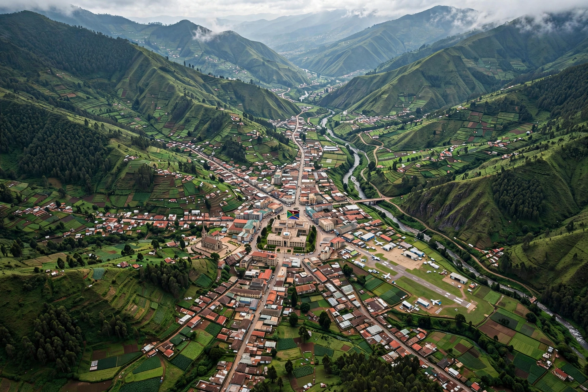

Mbabane
From Wikipedia, the free encyclopedia
| Mbabane | |
 | |
| Country | Eswatini |
|---|---|
| Region | Hhohho |
| Status | Capital (administrative) and largest city |
| Founded | 1902 |
| Elevation | ≈1,243 m (4,078 ft) |
| Population | ≈95,000 (metro estimate) |
Mbabane is the capital and largest city of Eswatini (formerly Swaziland), a landlocked kingdom in Southern Africa. It serves as the country's administrative capital, while Lobamba is the legislative and royal capital. Mbabane sits in the Mdzimba Mountains of the Hhohho Region, near the border with South Africa.
History
The town grew around a cattle post of King Mbandzeni in the nineteenth century and takes its name from Chief Mbabane Kunene. It became the capital of the British protectorate of Swaziland in 1902, when administration moved from Bremersdorp (now Manzini). The city remained the capital when the country gained independence in 1968 under King Sobhuza II.
Geography and economy
At over 1,200 metres elevation in the highveld, Mbabane has a mild subtropical highland climate. Its economy centres on government, services, tourism and nearby sugar, timber and mining operations; the city lies on the MR3 highway linking South Africa and Mozambique. Attractions include the Swazi Market, golf at the Royal Swazi Spa valley, and the nearby Mantenga Nature Reserve and Mlilwane Wildlife Sanctuary. Mbabane is twinned with Fort Worth, Texas.
See also: Mswati III, Southern Africa